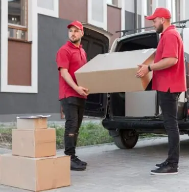
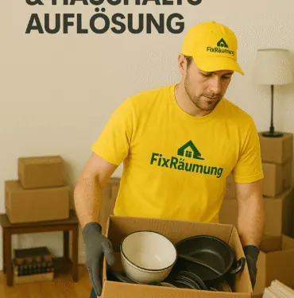
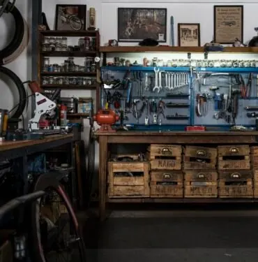

Anfrage senden
Wir halten Sie klar informiert und stimmen Termine, Umfang und Übergabe nachvollziehbar ab.
FIXREUMUNG ist Ihr zuverlässiger Partner für Räumungen, Entrümpelungen, Wohnungsauflösungen, Verlassenschaftsräumungen und Messie-Räumungen in Wien und ganz Österreich.

Von der einzelnen Kellerräumung bis zur kompletten Firmenauflösung: FIXREUMUNG übernimmt Planung, Tragen, Abtransport, fachgerechte Entsorgung und besenreine Übergabe.

Wohnungen jeder Größe zuverlässig räumen und besenrein übergeben.

Kellerabteile, Lagerräume und Nebenräume rasch wieder nutzbar machen.
Einfühlsame Räumung bei Verlassenschaften mit klarer Abstimmung.
Diskrete Hilfe bei stark belasteten Wohnungen und Häusern.
Büros, Praxen, Lager und Gewerbeflächen termintreu räumen.

Garagen, Schuppen und Nebenräume geordnet entrümpeln.
Dachböden sicher räumen, tragen und fachgerecht entsorgen.
Geschäftslokale und Betriebsflächen ordentlich übergeben.
Komplette Haushalte strukturiert auflösen und besenrein übergeben.
Betriebsflächen, Büros und Lager professionell räumen.
Transparent vom ersten Kontakt bis zur sauberen Übergabe.
Wir halten Sie klar informiert und stimmen Termine, Umfang und Übergabe nachvollziehbar ab.
Wir halten Sie klar informiert und stimmen Termine, Umfang und Übergabe nachvollziehbar ab.
Wir halten Sie klar informiert und stimmen Termine, Umfang und Übergabe nachvollziehbar ab.
Wir halten Sie klar informiert und stimmen Termine, Umfang und Übergabe nachvollziehbar ab.
Wir halten Sie klar informiert und stimmen Termine, Umfang und Übergabe nachvollziehbar ab.
Lokale Seiten für Bundesländer und Wiener Bezirke helfen Ihnen schnell zur passenden Information.
Die wichtigsten Antworten zu Kosten, Ablauf, Terminen und Übergabe.
Die Kosten hängen von Menge, Lage, Zugänglichkeit, Demontage und Entsorgungsaufwand ab. Nach der kostenlosen Besichtigung erhalten Sie ein klares Fixpreis-Angebot.
Ja. Die Besichtigung ist kostenlos und unverbindlich. Danach wissen Sie genau, welcher Aufwand entsteht und welcher Fixpreis gilt.
Kurzfristige Termine sind oft möglich. Am schnellsten geht die Abstimmung telefonisch oder per WhatsApp Anfrage.
Ja. Nach der Räumung werden Wohnung, Keller, Büro, Garage oder Geschäftsfläche besenrein übergeben.
Ja. FIXREUMUNG achtet auf fachgerechte Entsorgung, sinnvolle Trennung und sauberen Abtransport.
Rufen Sie direkt an, schreiben Sie per WhatsApp oder senden Sie die wichtigsten Eckdaten zur Räumung.